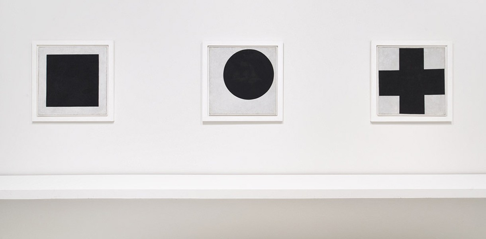

...стремление к композиционности в искусстве есть стремление цельно воспринимать, видеть и изображать разнопространственное и разновременное.
Ни одна композиция не существует без плоскости, а формат ограничивает и одновременно создает композицию. Композиция стремиться к ясности и равновесности, к целостности и пониманию.
Двигательную форму цельности мы можем назвать конструктивной формой, форму же зрительную — собственно композиционной формой. Приведение в произведениии зобразительного материала к двигательной цельности будет конструкцией. Приведение к цельности зрительного образа будет композицией.
Абстракция — процесс обобщения; результат абстрагирования.
Абстракция Малевича развивается в прикладную функцию. Архитектура прежде всего. Модули — квадрат, круг, крест, из которых строится новый супрематический мир. Исследование свойств фигур. Тотальная ясность и абсолют, абстракция — геометрическая форма в своей тотальности.
Деконструкция композиции на примере работы Джорджо Моранди.
Манипуляции со скоростью и количеством изменений между кадрами — это тайная алхимия, благодаря которой мультипликация воспроизводит иллюзию жизни.
Канадский кинорежиссёр-мультипликатор Норман Макларен говорил:
Мультипликация — это не искусство движущихся рисунков, а искусство нарисованных движений. То, что происходит между кадрами, важнее того, что происходит в них.